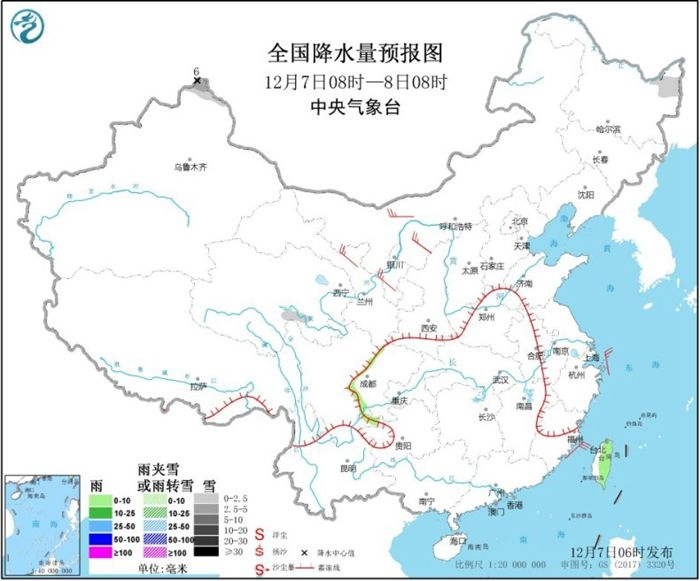
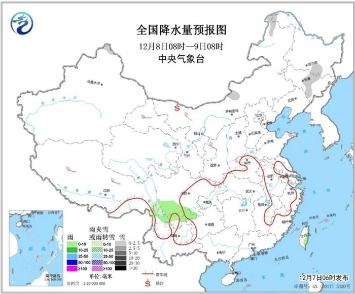

中国天气网讯 今天（7日）进入二十四节气的“大雪”节气，然而本周末的天气却并不应景，全国大部都会是晴好天气，气温也将逐步攀升至偏高水平。同时，今明两天冷空气势力弱，雾霾趁机出没，华北黄淮一带周末外出时要注意做好防护措施。


而在阳光的普照下，昨天北方气温率先回升，今天南方也将加入回暖阵营，各地气温都将逐步回升到较常年同期偏高的水平。
未来三天，东北地区回温最为显著，累积升温幅度普遍能达10℃以上，部分地区超过15℃。像是哈尔滨，升温前最高气温还在零下17.2℃，升温后下周一将达到0℃左右；而沈阳则会从零下11.5℃升到4℃左右。
除了东北以外，黄淮、江淮一带下周初的最高气温也能重归15℃上下，比之前温暖一些。
需要注意的是，天空放晴后白天气温升得快，但是夜间辐射降温，昼夜温差也会迅速拉大。尤其是西北地区中东部、华北西部以及江南南部等地，未来几天昼夜温差可以达到15℃以上。例如，太原8日最高气温10℃、最低气温零下6℃；长沙8日最高气温18℃、最低气温3℃，早出晚归的市民还是要参考最低气温来选择衣物。
此外，冷空气实力弱，气温逐步回升也会造成雾和霾趁机发展增多。预计7日至9日，华北中南部、黄淮中西部、汾渭平原等地霾天气发展，有轻至中度霾，局地重度霾。10日白天，受冷空气影响，华北中部霾过程逐渐消散，华北南部、黄淮中西部、陕西关中等地的霾自北向南减弱。
另外，预计今天早晨至上午，河北南部、河南中东部、山东西部、安徽北部、江苏北部、湖北北部和中部、四川盆地东南部、贵州北部等地有大雾，其中，河北南部、河南中东部、山东西南部、重庆中南部、贵州北部等地的部分地区有能见度不足500米的浓雾，局地有能见度不足200米的强浓雾。为此，中央气象台今早6时继续发布大雾黄色预警。提醒市民周末外出时要戴好口罩，同时注意防范低能见度天气对交通出行的不利影响。